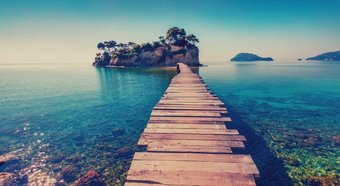

Quem sou?
Willy Nogueira
Formação:
Corel Draw e Front Page html concluido em Dezembro/2004.
Manutenção e configuração de microcomputadores concluido em Abril/2004.
Windows, Word, Excel, Access e Internet concluido em Julho/2004.
Inglês intermediário.
Personalidade:
perseverante, intuitivo introvertido, comunicativo objetivo, espontâneo.
Desafio:
Criar e administrar servidor de jogo em java.(L2 Maximus)
Horas livres:
Estudar, Jogar online, cinema, surfar "ta faltando tempo pra dar aquelas vacadas, eita."
Interesses/Objetivos
Meu objetivo
Meu alvo é concluir o Bacharelado em Ciências da computação com êxito e avançar na area da tecnologia, então me aperfeçoar com intuito de executar meu proposito.
Surf é vida
sou da tranquilidade e da positividade, surfar esvazia minha cabeça de problemas e enche meu corpo de adrenalina. A vida pra mim é como surfar, não importa quantos tubos se fechem, não importa quantas ondas tenha que furar, não importa quantas vacas tome, nunca desisto, pois a satisfação em acertar é maior que o meu medo de errar.
Sonho de infância
Uma das características que me fez querer ser um programador é que, a tecnologia não para de evoluir. Hoje eu tenho 30 anos de idade e quando olho para o passado não muito distante, fico impressionado em como o mundo mudou desde a minha infância. Hoje temos fácil acesso a internet, notebooks, smartphones, tablets, computadores quanticos… uau, posso passar horas listando tudo o que mudou. E acredito que o fato da tecnologia estar em constante evolução também é o atrativo para muitos que escolhem seguir essa área de conhecimento. É empolgante pensar nas possibilidades e poder fazer parte dessa evolução.
Projetos
Bastante interesse em algo marcante que traduza minha especialidade conectada com meu objetivo alvo. Projetos que sairam do papel, sonhos que se realizam.

Defesa da vida
A beleza da natureza, proteger a natureza significa proteger a vida, o abrigo e sustento tanto para nós quanto para a vida selvagem nos lugares mais vitais do planeta. Nossas florestas e oceanos são fonte de cultura para muito povos e elementos essenciais para estabilizar o clima. Nossa biodiversidade é fonte de saúde e inovação. Desta interdependência entre os seres e os ecossistemas, da qual estamos profundamente conectados, depende nossa própria sobrevivência.
Contatos:
Twitter
Facebook
Instagram
Email